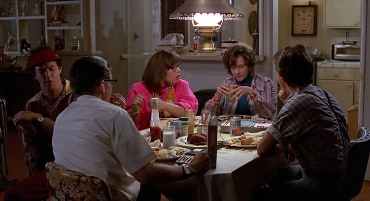

Personajes Principales
Marty McFly: Protagonista de la pelicula e hijo de Georfe McFly y Lorraine McFly. Viaja entre el pasado y el futuro, encontrandose con sus antepasados y descendientes. Junto a su amigo Doc Brown, restauran el continuo espacio-tiempo, ademas de encontrarse con Biff Tannen y otros miembros del clan Tannen.
Emmett "Doc" Brown: Inventor de la máquina del tiempo "DeLorean". Amigo de Marty, le ayuda en múltiples ocasiones a restaurar el continuo espacio-tiempo y a revertir los cambios causados por los viajes en el tiempo.
Biff Tannen: Es el antagonista principal, un abusón local que a menudo molestaba a George McFly. Proviene de una familia de abusones de Hill Valley, estando la mayoria involucrados en abusos hacia los McFly.
Familia McFly
George McFly: Padre de Marty, Linda y Dave. Se describe como un personaje débil, convirtiéndolo en el objetivo de los abusos de Biff Tannen.
Lorraine Baines-McFly: Esposa de George y madre de Marty, Linda y Dave. Al comienzo de la historia se muestra como un personaje infeliz con su matrimonio, cosa que cambia al final de la historia.
Dave McFly: Hijo mayor de los McFly. Al principio de la pelicula se muestra como Dave trabajaba en el Burguer King, pasando a trabajar en una empresa de contabilidad al final.
Linda McFly: Hija mediana de los McFly. Linda se mostraba como una chica cuya única preocupación era captar la atención de los hombres, fracasando en el intento. Al final se muestra como una trabajadora de una boutique que se ha vuelto muy popular entre los chicos.